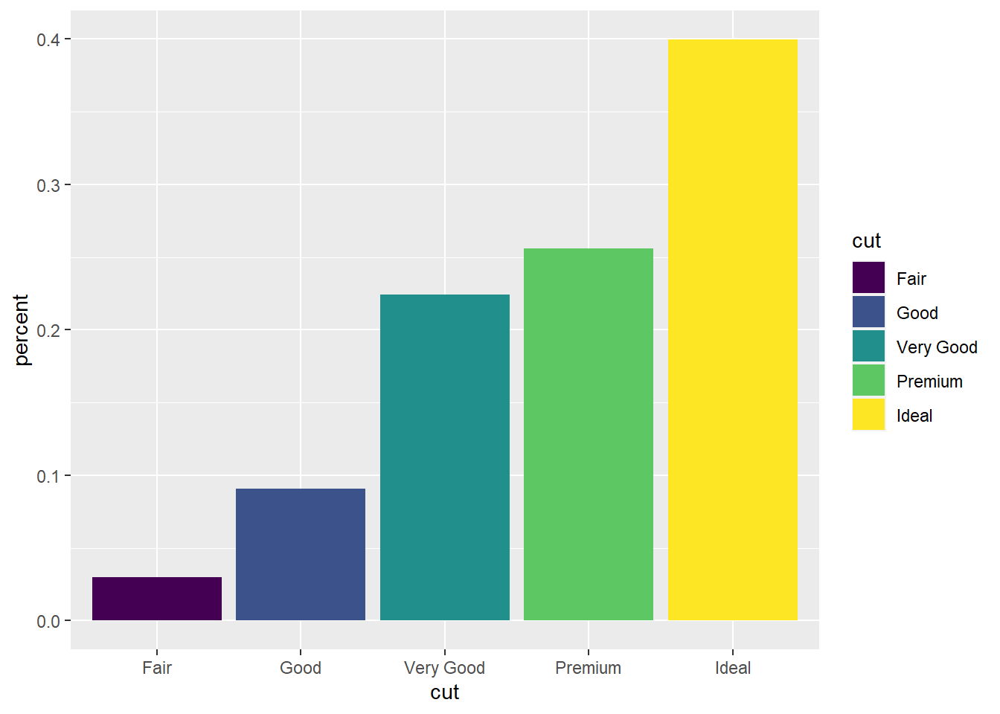

Chapter 7 Exploratory Data Analysis
library(tidyverse)
library(nycflights13)
mpg_df <- ggplot2::mpg
diamonds_df <- ggplot2::diamonds
flights_df <- nycflights13::flights7.1 The process of EDA
EDA is an iterative cycle of:
Generate questions about the data.
Search for answers by visualizing, transforming and modeling the data.
Use findings to refine questions or generate new questions.
EDA is does not have a strict structure or a formal set of procedures; the free-formed nature of EDA tends to be both a blessing and a curse. On one hand we are free to pursue questions with some degree of creative liberty. On the other hand, it’s hard to predict the type and quality of insights we will get after a day’s work. But that is what makes it “exploratory” data analysis: some paths lead to treasure and some paths lead to dead-ends. That being said, my personal creed has always been: negative results are still results and should still be appreciated.
7.2 Questions
“Far better an approximate answer to the right question, which is often vague, than an exact answer to the wrong question, which can always be made precise.” - John Tukey.
Asking questions and seeking their answers is the main guiding force when doing EDA. Since EDA has no set procedural process, the questions we ask dictate what we actually do. Doing high quality EDA requires asking high quality questions and getting high quality questions just requires generating a large quantity of them. The idea is to ask little questions which progressively reveal a narrative within the data.
When starting with a new, unseen data set it is generally hard to develop good questions without first understanding the nature of the data. A good starting point is to come up with a list of questions that are useful for all data sets. There are 2 types of questions which are always useful to answer:
- Questions of variation: how do the values within a given column vary across observations? Some example questions might be:
- What does the distribution of a given variable look like?
- What is the expected value, standard deviation, 1Q, median, 3Q and IQR of the numeric variables?
- Questions of **covariance*: how do the values between multiple columns vary together?
- What do the joint distributions of pairs of variables look like?
- What are the correlation coefficients between each pair of variables?
- Are the relationships linear, parabolic, logistic, exponential or completely uncorrelated?
Investigating and answering these questions can lead to small insights that help us refine subsequent questions. For example, if we notice that the “revenue” variable skews heavily to the right, we can ask a subsequent chain of questions such as:
- “Does this business make its most of its money primarily off of a few big revenue generating events?”
- “Is this business model viable moving forward?”
- “Should this business invest in a more constant stream of smaller revenue generating events?”
Notice that questions 2 and 3 are the “right” questions in the sense that any business would want an approximate answer to these questions, even if the answers come with some degree of uncertainty.
Also notice that answering questions 2 and 3 might require pulling in more data not contained in the original data set. For example, it’s generally hard to say if a business model is viable without looking at macroeconomic trends and how a market is changing. It’s also hard to say if a business should invest in XYZ, without doing a cost-benefit analysis of XYZ. Nonetheless, we should recite the mantra from the beginning “Far better an approximate answer to the right question, than an exact answer to the wrong question.”
7.3 Questions of variation
Variation is the tendency of the values of a variable to change from measurement to measurement. Notice that the definition of “variation” is somewhat vague. One way to represent variation is the distribution of a random variable, which is a mathematical function that describes how frequently different values appear when taking measurements.
For discrete numeric variables, the distribution is usually given as a probability mass function (pmf). A pmf is a function \(p:\mathbb{N} \to [0,1]\) where \(p(n)\) is the probability of observing the integer \(n\) when measuring. That is: \(p(n) = Prob(X = n)\)
For continuous numeric variables, the distribution is usually given as a cummulative distribution function (cdf). A cdf is a function \(F:\mathbb{R}\to [0,1]\) where \(F(a)\) is the probability of observing a value less than or equal to \(a\). That is: \(F(a) = Prob(X\leq a)\). Finding a formula for a cdf is usually really hard. Instead, we usually need the help of a probability density function (pdf) which is a function \(f:\mathbb{R}\to \mathbb{R}\) such that \(F(a) = \int_{-\infty}^a f(x)dx\).
For categorical variables, we usually talk about the distribution as a functon \(p:\mathcal{C}\to [0,1]\) where \(\mathcal{C}\) is the set of categories and \(p(c)\) is the probability of observing the category \(c\). That is: \(p(c) = Prob(X = c)\).
If we squint our eyes, notice that a categorical variable can be interpreted as a numeric variable: we just label each category with an integer 1, … , \(n\). This is precisely the idea of a factor object in R. By converting categories to integers, we can perform operations on categorical variables that are normally reserved for numeric data types.
Distributions can be visualized using histograms (for numeric variables) and bar charts (for categorical variables).
head(diamonds_df)## # A tibble: 6 × 10
## carat cut color clarity depth table price x y z
## <dbl> <ord> <ord> <ord> <dbl> <dbl> <int> <dbl> <dbl> <dbl>
## 1 0.23 Ideal E SI2 61.5 55 326 3.95 3.98 2.43
## 2 0.21 Premium E SI1 59.8 61 326 3.89 3.84 2.31
## 3 0.23 Good E VS1 56.9 65 327 4.05 4.07 2.31
## 4 0.29 Premium I VS2 62.4 58 334 4.2 4.23 2.63
## 5 0.31 Good J SI2 63.3 58 335 4.34 4.35 2.75
## 6 0.24 Very Good J VVS2 62.8 57 336 3.94 3.96 2.48Let’s analyze the variation of the variables in this data set by looking at the distributions of a few variables. For example, we can look at the distribution of the cut variable via a bar chart.
ggplot(diamonds_df) +
geom_bar(aes(x = cut, fill = cut))
We notice that Ideal diamonds are the most numerous in the data set. One question we can ask is “should Ideal be the most numerous? Are Ideal diamonds rarer than lower quality ones in nature? Do jewelers only buy Ideal diamonds because they are easier to sell?” These are all questions that can be followed up on by pulling in sales data or market data on diamonds.
Another question we can ask is “what percentage of the diamonds are Ideal?” We can answer this question by converting the bar chart into relative counts:
ggplot(diamonds_df) +
geom_bar(aes(x = cut, y = after_stat(count)/sum(after_stat(count)), fill = cut)) +
labs(y = "percent")
Ideal diamonds make up 40% of the data set. Premium makes up 25% of the data set. Together, over 65% of the diamonds are of the two highest qualities. Again this is interesting since we would expect higher quality diamonds to be rarer in general.
We can also examine a continuous variable like carat. However, since continuous variables can take any value along an interval of real numbers, it isn’t useful to organize them by individual values. To illustrate the issue, here is an example data set with a single continuous column
example <- tribble(
~name, ~height,
"john", 60.86,
"mary", 61.12,
"amber", 58.97,
"alphonso", 56.33,
"kate", 60.18,
"Judith", 57.77,
"alan", 60.58,
"sullivan", 59.09,
"jeremy", 58.69,
"phil", 59.05,
"jasmine", 58.28,
"hal", 59.62,
"abby", 58.95,
"jim", 60.41,
"isiah", 58.72,
"hannah", 59.22
)
example## # A tibble: 16 × 2
## name height
## <chr> <dbl>
## 1 john 60.9
## 2 mary 61.1
## 3 amber 59.0
## 4 alphonso 56.3
## 5 kate 60.2
## 6 Judith 57.8
## 7 alan 60.6
## 8 sullivan 59.1
## 9 jeremy 58.7
## 10 phil 59.0
## 11 jasmine 58.3
## 12 hal 59.6
## 13 abby 59.0
## 14 jim 60.4
## 15 isiah 58.7
## 16 hannah 59.2What happends if we try to visualize the distribution with a bar graph?
ggplot(example) +
geom_bar(aes(x=height)) +
coord_cartesian(ylim=c(0,10))The bar chart tells us there is each person has a different height, which isn’t very useful. Generally speaking, most continuous variables will suffer from this problem where the observations will all have slightly different values.
A more useful visualization is to group the observations into buckets using a histogram:
ggplot(example) +
geom_histogram(aes(x=height), binwidth=2)This visualization is more useful since we can actually see how data points are concentrated. We can get more granular by reducing the size of the buckets:
ggplot(example) +
geom_histogram(aes(x=height), binwidth=0.5)We can also get relative counts like before:
ggplot(example) +
geom_histogram(aes(x=height, y = after_stat(count)/sum(after_stat(count))), binwidth=0.5) +
labs(y="proportion")The probability density function (pdf) is defined to be the limit as the number of observations \(N\to \infty\) while \(binwidth \to 0\). In other words, the pdf is the result of seeing how “infinitely many” observations are allocated into “infinitely many” bins, with each bin of “infinitesimally small” width. If we think of the histogram as representing “mass”, then this procedure represents finding the mass of an ever-so-thin sliver (hence the name probability density function).
This also highlights a key mathematical idea: the pdf is an abstract object that models what we think the histogram should look like if we had “infinitely many” data points. The nuance here is that the pdf is a model for the population’s histogram, not the other way around. Pdf’s act as middlemen: they are useful when we don’t have access to a lot of data points and we need to make assumptions on what a population’s histogram might look like.
For example, if we had a sample of 50 data points out of a population of 2 million, we would need to bridge the gap by using a pdf as a stand-in for the missing data. Using a pdf comes at a cost: we have to make assumptions about the nature population (e.g. we might have to assume that human heights are normally distributed).
If we had access to a lot of data points (as is the case in this era of big data), we can just cut out the pdf middleman entirely and use the sample histogram to approximate the population histogram. This idea of using the sample histogram directly is called bootstrapping.
Anyways, let’s draw a histogram for the carat variable in the diamonds_df data set:
ggplot(diamonds_df) +
geom_histogram(aes(x = carat), binwidth = 0.1)
Recall that pdf’s are limits of histograms as the number of observations increase to infinity. We can thus numerically approximate a pdf from a histogram by linearly interpolating the bar heights. The resulting approximation is called a frequency polygon and can be graphed using the geom_freqpoly() layer:
# draw histogram with frequency polygon overlayed
ggplot(diamonds_df) +
geom_histogram(aes(x=carat), binwidth=0.1, alpha=0.2) +
geom_freqpoly(aes(x = carat), binwidth = 0.1, color = "blue")Frequency polygons make it easy to compare distributions of subgroupings:
# compare distribution of carat across different cuts
ggplot(diamonds_df) +
geom_freqpoly(aes(x=carat, group = cut, color = cut), binwidth = 0.1)The distribution of diamonds by carat has roughly the same shape across all 5 cuts. We do see that the Ideal category contains substantially more low-carat diamonds than all the other cuts.
Another interesting observation on the distribution of the carat variable is that there are spikes at whole number values and the half-fraction values. This may (or may not) be an artifact of the the bin size, so we can investigate this adjusting the bin width:
ggplot(diamonds, mapping=aes(x=carat)) +
geom_histogram(binwidth = 0.01)
We see a very interesting shape to the distribution: there are high spikes concentrated at the whole number values and low fractional values, but tend to trail off as the values approach the next highest integer. We can make a conjecture here about the nature of the diamond business and consumer behavior: diamond prices might be tiered by carat size. For example, 1.48 and 1.5 carat diamonds might be priced the same, so customers are more likely to buy the 1.5 carat diamonds over the 1.48 carat diamonds.
We can investigate this by looking at the relationship between carat size and diamond prices in the next section on covariation.
Sometimes, we might want a quick and dirty summary of the distribution of the data. In this case, a boxplot is a good visualization tool.
ggplot(diamonds_df) +
geom_boxplot(aes(x=carat))The points plotted here are values that lie outside the \(Q3+1.5\cdot IQR\) threshold. This actually highlights an important limitation of box plots: they have a tendency to over emphasize the number of outliers. The issue is that outlier values usually make a small percentage of the data set. For example, if \(X\) follows a normal distribution, then only 0.02% of all obserations of \(X\) lie outside of 3+ standard deviations away. If we had 1,000,000 observations, we would expect to see approximately 2,000 outlier values. A box plot would plot all 2,000 outliers and make it seem like we have a heavily skewed data set.
We can attempt to fix this issue with box plots by visually representing the frequencies. This leads us to two other kinds of plots: violin plots and letter value plots.
ggplot(diamonds_df) +
geom_violin(aes(x=carat, y=cut, fill=cut))library(lvplot)
ggplot(diamonds_df) +
geom_lv(aes(x=cut,y=carat))
7.4 Questions of covariation
Questions of covariation primarily investigate how different variables are related to each other. From the previous section, we observed the interesting shape of the distribution of the carat variable and made a conjecture about how diamonds are priced. We can pursue this avenue questioning further by studying the covariation between carat and price.
The easiest way to study covariation is with a scatter plot:
ggplot(diamonds_df) +
geom_point(aes(x=carat, y=price))
We see a general positive association between carat and price, which makes sense; bigger diamonds generally cost more money. However, the scatter plot is very crowded, making it hard to read. We can try to ease the crowding by adding some jitter and lowering the opacity of each data point.
ggplot(diamonds_df) +
geom_point(aes(x=carat, y=price), position = "jitter", alpha=0.1)Overlapping points are thus highlighted by darker concentrations in opacity. In other words, we can use color shading to represent how density in a region of space. This idea of using shading to convey density can also be leveraged using tile plots.
# tile plots with rectangular tiles
ggplot(diamonds_df) +
geom_bin2d(aes(x=carat, y=price))# tile plots with hexagon tiles
ggplot(diamonds_df) +
geom_hex(aes(x=carat, y=price))We can also group just the carat axis into bins and visualize the distribution of price in each bin of carat. This is probably best done with a box plot
ggplot(diamonds_df, mapping = aes(x=carat, y=price)) +
geom_boxplot(aes(group = cut_width(carat,0.1)))
All of these visualizations tell us about the joint probability distribution of carat and price as observed in the data. The scatter plots and tile plots give us a visual representation of the distribution using shading to represent frequency, while the binned box plots visualize the conditional distribution of price along fixed values of carat.